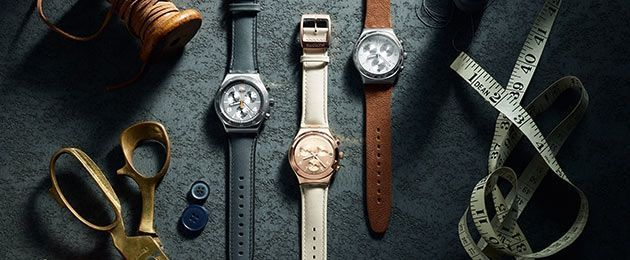

About Us

JAINIL's SONIC Company, which operates under Citizen Watch, has roots dating back to the early 20th century. Although it specialises in electronics, the Tokyo-based firm is best known for the many celebrated watch brands under its name.
